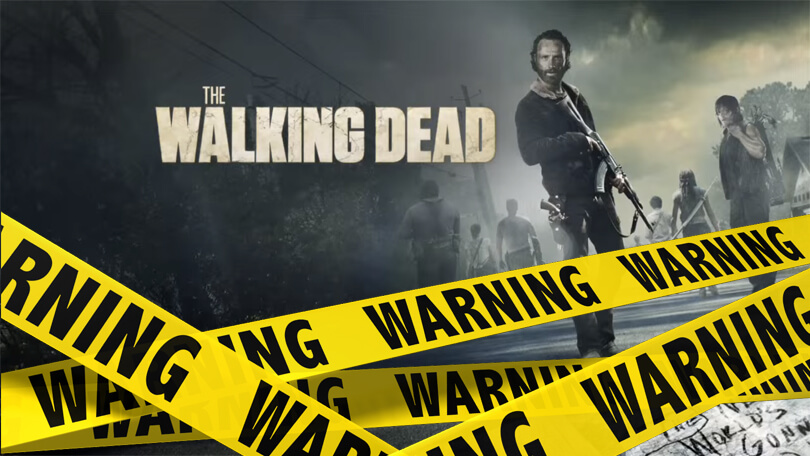
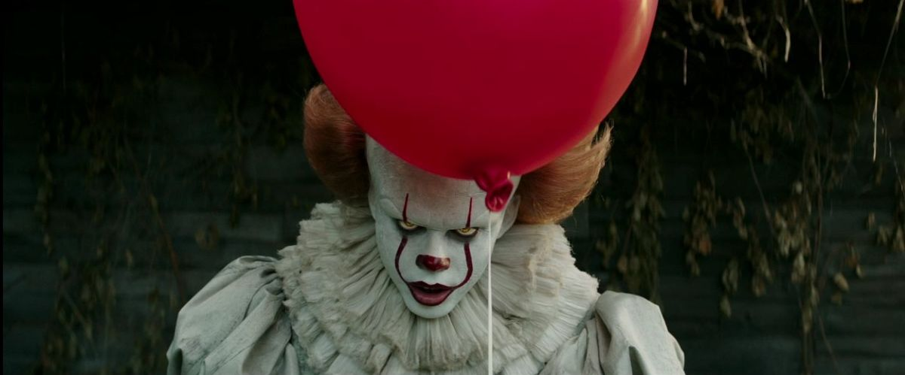
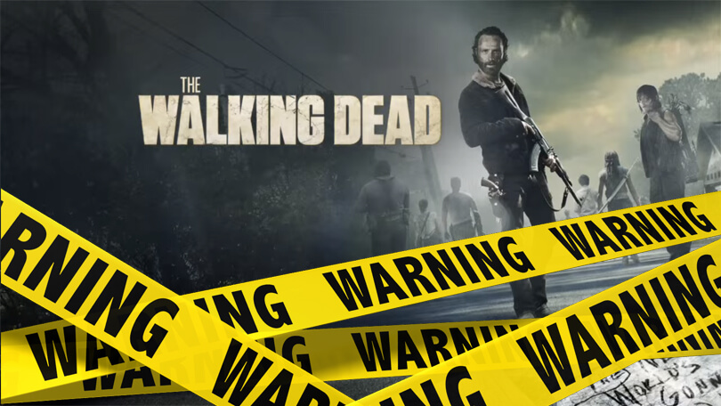
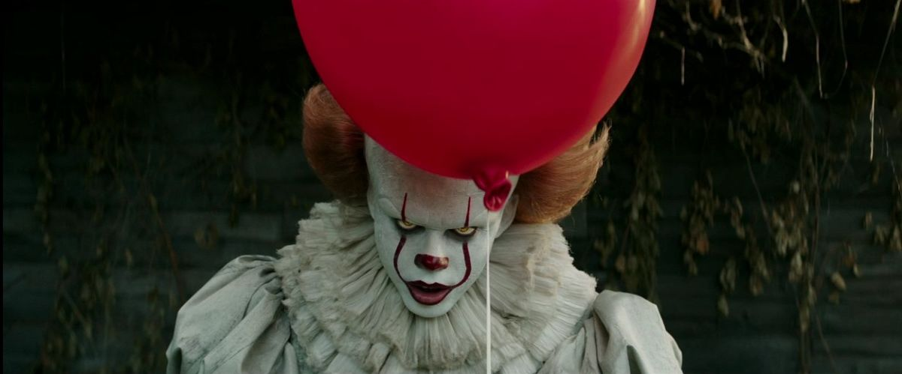
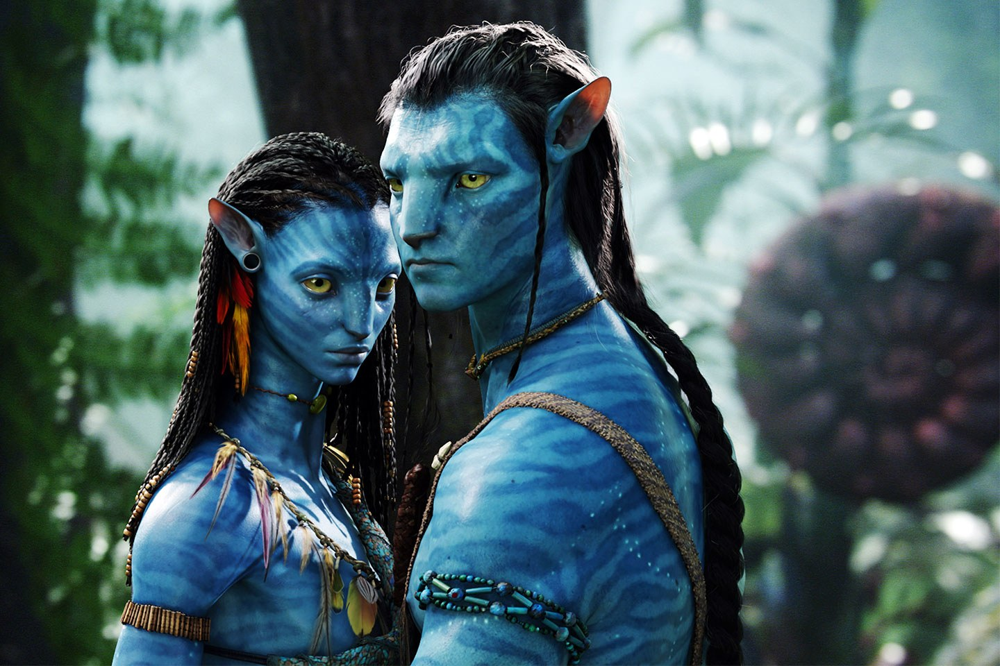

-----------The Walking Dead word verwijderd van netflix.--------------------Stephen king's IT film opnieuw in de bioscoop.----------------


 



De laatste tijd is Netflix een hele hoop films en series aan het verwijderen. Nu is het helaas ook afgelopen met The Walking Dead(TWD). TWD is Eén van de meest bekeken series op netflix en heeft ook een hoop afleveringen. In 2015 kwam TWD voor het eerst op netflix, langzaam aan zijn er steeds meer seizoenen opgekomen, maarliefst 6 seizoenen staan momenteel op Netflix. Maar daar heb je binnekort niets meer aan. Lees meer...
De film It werd in 1990 voor het eerst uitgebracht en het was een groot succes. De film was deze dagen nogsteeds bekend maar al heel oud dus leek het de regiseurs een goed idee om er een nieuwe versie van te maken. Het zou hetzelfde verhaal blijven alleen nieuwe acteurs en betere kwaliteit. De film is ondertussen al in de bioscoop.Lees meer...
-----Opnamens voor Avatar deel 2 zijn officieel begonnen.-----------------------5 Films die je niet mag missen in Oktober.------------------
De camera's zijn begonnen met filmen voor de nieuwe avatar film van James Cameron. In 2009 kwam Avatar uit, het was een monsterhit. Na een lange tijd wachten zijn er nu dus weer opnamens begonnen voor deel 2! De eerste officiële foto van een aantal nieuwe karakters is al uitgebracht. Lees meer...
Onophoudelijk worden we overspoeld door nieuwe bioscoopfilms. Elke week gaan er gemiddeld zo'n zeven in première. Hieronder een selectie van de grootste, interessantste of opmerkelijkste releases van de komende maand.Klik hier voor het volledige overzicht.